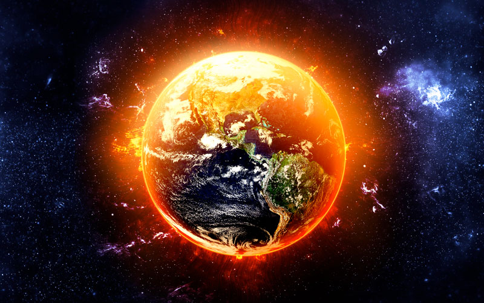

En este blog abordaremos este tema tan importante no para una o dos personas, un país o un
continente sino para TODO EL MUNDO
que parece que lo estamos ignorando cuando el a gritos nos pide AYUDA, este tema es de gran
importancia ya que el mundo,
el Planeta Tierra es nuestro sustento y gracias a el vivimos.
Desarrollo
Durante el 2020 todo empezó como un plan a favor de un cambio para reducir el calentamiento
global, una lista de hábitos que
seguiría todo el mundo para un cambio positivo, el implemento de métodos del gobierno para
una vida verde. Pero todos estos planes
no contaban con que dentro del año que tanto se prometia este cambio llegaría y golpearía y
devastaría la economía mundial al igual
que dejaría a su paso una realidad complemente nueva y diferente la cual echaria atras todos
los planes.
Pero esto no queria decir que una pandemia que debastaria al mundo entero y que dejara miles
de muertos a su paso lo detuviera, a el
cambio climático esto quiere decir que debido a la situación se detuvo todo y las cifras que
antes parecian ser un poco controladas
o al menos eso era lo que nos decían eran un poco controlables, al día de hoy las cifras son
preocupantes e inquietantes y tenemos que
ponerle atención, ya que no sabremos si habrá un mañana.
Motivación
Este artículo tuve la motivación de escribirlo y llevarlo a cabo por que se me hace un tema
bastante preocupante
que considero que el mundo sabe que existe y lo perturbador que puede ser, mas no le dan la
importancia que deberian de darle ya que es
igual de importante como cualquier cosa mas prestigiosa, por que por el mundo vivimos y sin
el por lo menos ahora, no somos nada.
En esta imagen se ilustra el calentamiento global como va a estar el planeta si
lo cuidamos o no
Ranking de países donde el problema es mas grave
27/11/21
Enlistado de países
En esta lista estan expuestos en un top 10 de menor a mayor países, los cuales afectan y
atribuyen mas al calentamiento
global entre 2018 y 2019.
Arabia Saudita con 1.6% de participación global
Indonesia con 1.6% de participación global
Corea del Sur con 1.7% de participación global
Irán con 1.8% de participación global
Japón con 3.0% de participación global
Rusia con 4.7% de participación global
India con 6.8% de participación global
Unión Europea +RU 8.7% de participación global
Estados Unidos con 13.4% de participación global
China con 30.3% de participación global
En esta imagen esta representado globalmente el cambio que se vive
Enlistado de páginas donde se puede obtener más información
29/11/21
Enlistado de páginas
A continuación encontraras un listado de páginas donde puedes obtener mas información al
respecto sobre el tema de
fuentes confiables y poseen más información.
En esta imagen se ilustra una forma de como seria entre un cambio climatico en
un futuro y si lo salvamos como podria ser
Que es el calentamiento global
En el video se explica como funciona y como se ha creado el cambio climatico a traves del tiempo y
con el paso de los años
como se ha intentado erradicar en el problema pero aun no lo hemos podido parar ya que es un cambio
que nos ha estado afectando
a todos y hemos sido parte de el ya que todos los días contribuimos al consumir gran de la mayoría
de las cosas que producen una
gran cantidad de CO2.
En el video se refiere a una cita basada de la ONU que dice lo siguiente "El cambio climático se
refiere a los cambios a largo plazo de las temperaturas y los patrones climáticos.
Estos cambios pueden ser naturales, por ejemplo, a través de las variaciones del ciclo solar. Pero
desde el siglo XIX, las actividades humanas han sido el principal motor del cambio climático,
debido principalmente a la quema de combustibles fósiles como el carbón, el petróleo y el gas."
Investigación
17/01/22
Que es el Calentamiento Global
El calentamiento global a grandes rasgos podemos decir que es la temperatura en la atmósfera terrestre y de igual manera que oceánica ahora, al igual que es un cambio climático que afecta a la atmósfera y hace que produzcan gases de efecto invernadero haciendo que se dañe la atmósfera y el medio ambiente por igual, esto en lapso de un largo tiempo puede lograr que unos años el planeta Tierra sea inhabitable, a esto todos los programas a contribución para evitar el calentamiento global.
¿Como nos damos cuenta de como sucede? Es sencillo no tanto el hecho de darse cuenta si no de presenciarlo o percatarse de el, la forma mas ordinaria y muy común de saberlo es admirando el clima ya que esto lo afecta; y como lo sabemos, ya que el clima es el estado del tiempo de la atmósfera.
Uno de los efectos que produce este fenómeno es el calentamiento del mar; ¿Que efectos produce el calentamiento del mar? Al producirse este se genera una afectación en el ciclo del agua; y de que forma, al momento que se produce estas afectaciones el agua del mar se evapora y seguido a esto llueve sobre el mismo mar logrando asi un impedimento para que las nubes emigren hacia el continente y que llueva sobre los continentes del mundo logrando asi que no se lleve acabo el correcto ciclo del agua a esto se le conoce como El fenómeno del niño
Ahora ¿Que pasaría si fuera lo contrario? la respuesta es sencilla aunque cabe mencionar que no siempre puede ser asi por lo antes ya mencionado, pero el proceso a lo contrario a esto seria por primera instancia se enfrían los mares y por consiguiente las nubes llegan al continente para cumplir con el ciclo del agua, al igual que lo que produce esto las lluvias y las inundaciones que esto es bueno hasta cierto punto ya que recordemos que las inundaciones producen la destrucción de las comunidades ecológicas que comprenden vegetación, animales, etc.
¿Por que suceden o a que se deben las inundaciones? este tema aunque parezca poco relevante tiene mucho que ver con el calentamiento global más de lo que podría parecer ya que tiene que ver con los fenómenos meteorológicos que están conectados hasta cierto punto con este tema como ya antes había sido mencionado.
Nosotros las personas podemos en muchos casos ser y dar hinca pie a que esto suceda ya que en el aspecto de las causas humanas por las inundaciones, en este rubro entra el cambio climático,¿Y de que forma? con esto nosotros podemos con este cambio que producimos acelerar muchos procesos pero el principal es la fusión de nieves
Causas del Calentamiento Global
Los datos que logre obtener tras mi investigación es una conclusión de varios componentes que son bastante relevantes ya que muchas cosas como es bien sabido son cosas que practicamos diariamente y que son normales para nosotros pero muchas veces somos inconscientes de todo en lo que repercute esto al cambio climático, ahora bien claro que muchos hacemos este cambio de hábitos en nuestras vidas para contribuir a la disminución de este cambio, pero lamentablemente no es lo suficiente para lograrlo parar o al menos lograr un cambio notorio que nos ayude de manera favorable a la humanidad.
Ahora bien ¿Cuáles son estas causas?.La principal causa que mencionaremos como la mas importante es la acumulación de gases de infecto invernadero en la atmósfera, este suceso genera severas repercusiones en el medio ambiente como pueden ser el que llueva lluvia ácida, el desgaste de la capa de ozono como ya es bien sabido y el calentamiento global, el efecto invernadero y todo lo que conlleva a que se produzca, entre otras, ahora ¿Cómo funciona? lo que produce esto es la creación de gases que se acumulan en la atmósfera y absorben la energía infrarroja del sol, y esto contribuye al aumento de temperatura global del plantea Tierra.
Al igual que las otras otro factor que es importante y que contribuye al igual es la quema de combustibles fósiles ¿Cómo afecta esto? al hacerse este acto se produce una mayor cantidad de emisiones de dióxido de carbono lo que por consecuente hace que se acumule un exceso de temperatura lo que genera lo que conocemos como el calentamiento global, tomando en cuenta que uno de los combustibles fósiles más consumidos por los humanos ya que es de uso cotidiano como medio de transporte puesto de esta manera es la gasolina ya que esta compuesto por dióxido de nitrógeno, monóxido de carbono y dióxido de azufre; aunque los transporte publicos y de carga contaminan más que un carro de uso personal.
Una de estas causas es la alta producción de basura ¿Cómo afecta esto? el como afecta este punto al medio ambiente es algo parecido y va quizá muy de la mano ya que de la misma forma estos residuos que generamos generan gases que contribuyen a este llamado efecto invernadero, como es el Metano o CH4 y el Dióxido de Carbono o CO2, esto en consecuencia genera el calentamiento global y al igual como causa del calentamiento global se genera el deshielo en los polos que esto genera la extinción de algunas especies que habitan en estos polos.

Imagen representativa de el calentamiento global
Gases del efecto invernadero
Este efecto produce varios gases 5 para ser exactos los cuales su gestión afectan al medio ambiente por general y por igual, el efecto que se genera en el momento que ascienden a la atmósfera forman una especie de capa densa que esto impide la salida de calor que se ha producido por los rayos del sol al igual que el calor que produce toda la biomasa en la tierra en general, al producirse este fenómeno por ende sucede el acumulamiento de calor que calienta a la atmósfera.
A esto podemos decir por obvias razones que se ha desgastado nuestra atmósfera lo que por consecuencia y lo notamos todos cuando sucede es el calor que podría y llega a darse ahora lo que es cierto es que como el cambio sigue en un constante avance al generarse más calor la atmósfera sigue en constante cambio por el calor que se sigue generando se sigue desgastando, por lo que en un futuro no muy lejano las temperaturas hacia nosotros incrementaran más debido al desgaste mencionado y este cambio sigue y continuará hasta que se haga un cambio a bien por el medio ambiente.
Los gases que comprende este fenómeno son varios; el primero que mencionaremos es el que todo ya conocemos el H20 o en su compuesto químico que es el vapor ¿Cómo se genera? este se genera a partir de la evaporación del agua de los mares ríos, lagos,etc. Ahora tenemos que recalcar que este punto no contribuye de forma directa con este cambio climático, mas que con esto se generan las lluvias ácidas por que con esto junto con el los gases que ya se encuentran en el aire los lleva en la lluvia y esto lo genera, esto se tiende más en ciudades mas industrializadas.
También en esta lista de gases que se producen y que afectan a la atmósfera se encuentra el CO2 y este gas resulta principalmente de toda esta quema de combustibles fósiles que se utilizan en muchos ámbitos para la vida diaria. El CH4 que es el resultado de la descomposición de la materia orgánica. El N2O este gas se produce cuando se descomponen todos estos abonos que son utilizados en la agricultura. El CFc5 que es el resultado de los aerosoles de los refrigeradores.
 El Calentamiento Global
El Calentamiento Global 
 Ranking de países donde el problema es mas grave
Ranking de países donde el problema es mas grave 

 Investigación
Investigación